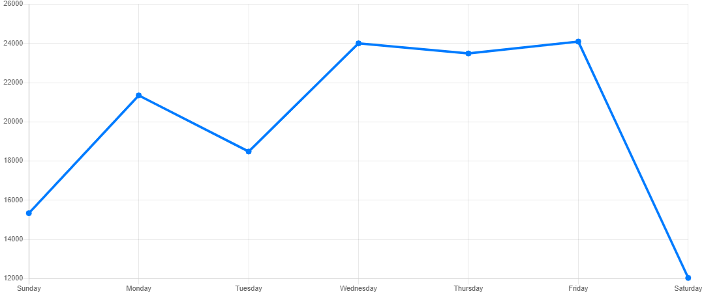

Farmer's Friend
Chào Mừng,
Micheal Nguyễn
Chung
Trang Chủ
Bảng
Bảng Sản Phẩm
Bảng Khách Hàng
Quản lý
Quảng Cáo
Doanh Thu
Báo cáo
Micheal Nguyễn
Hồ sơ
50%
Cài đặt
Hỗ trợ
Đăng xuất
2
Hồ Thăng Trình
15 mins ago
Film festivals used to be do-or-die moments for movie makers. They were where...
Võ Thúy Ngân
3 mins ago
Film festivals used to be do-or-die moments for movie makers. They were where...
Xem thêm
Lượt Truy Cập
This week
